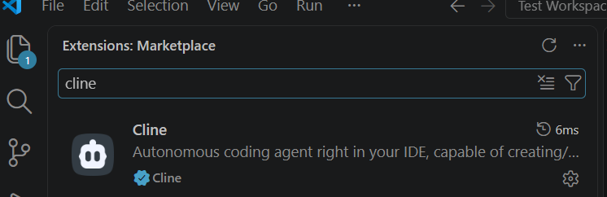
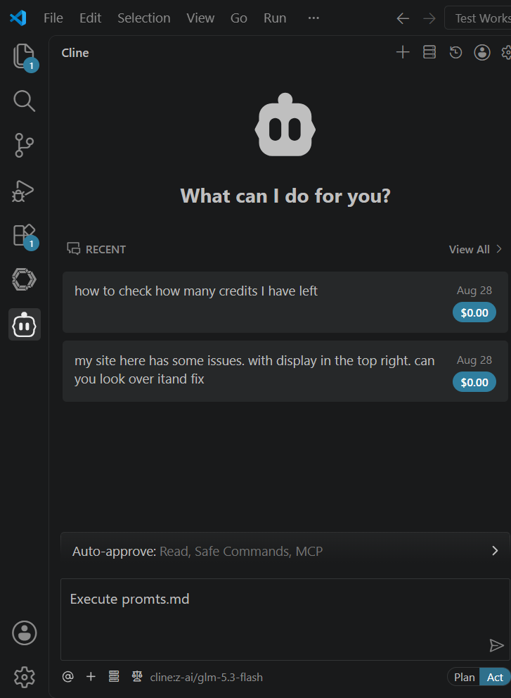
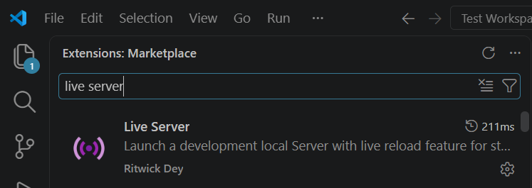
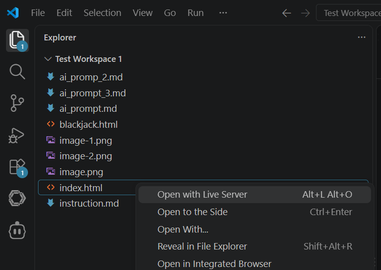
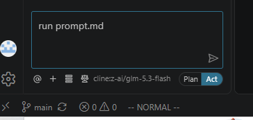
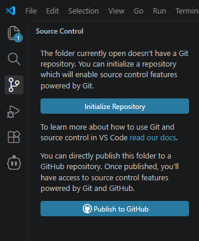
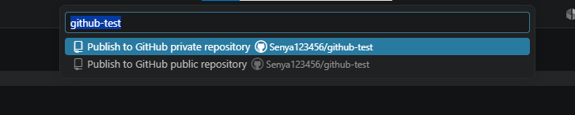
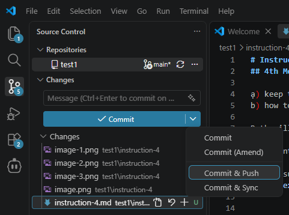
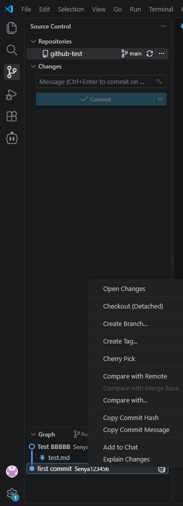

01
Install VS Code
Download and install Visual Studio Code.
TN-AI / Learn by making
A small workshop space for learning how AI tools, code, and curiosity can turn a blank folder into something real.
Workshop instructions
Made in the workshop
Free coding practice: turn an idea into Cline prompts and build something real — like the car racing game.
Third meeting / 10 steps
A practical guide to setting up your tools, working with Cline, and publishing your first creative experiment.
Download and install Visual Studio Code.
Install the Cline extension. It is easier to set up than Continue for this session.

Register with your school email, agree to everything, and choose the free GLM-5.3-Flash model.
Create a new folder in your preferred work directory, then open it in VS Code.
prompts.mdAdd this starter request to the new file.
# My Site Project
- Create a placeholder site using html+css+javascripts.
- Don't use fancy graphics [will be changed later].
- Input greeting for me. My name is Input Name.
- Create a button that gives random greeting.Give Cline the file and let it generate the starter project.

Install the Live Server extension to preview your project quickly.

Right-click the generated index.html and choose Open with Live Server.

Change the text, colours, and layout. Small edits are already creative decisions.
Keep exploring. The fastest way to learn is to make something you want to see.
Fourth meeting / Free coding
Creation practice before the Git(Hub) meeting: let an AI chatbot help you come up with an idea, turn it into a short sequence of Cline prompts, and build something real.
Tip for full brainless mode: use an AI chatbot like DeepSeek or ChatGPT to generate ideas, develop them, then ask it to write the Cline prompts for you — just describe your situation. For example:
I want to create a site with a simple car racing
game. I am using VSCode with Cline. Give me a
short sequence of Cline prompts to make this
happen.Keep the generated prompts in a prompts.md file so you can reuse and refine them later.
Type run prompt.md in the Cline chat and let Act mode execute the prompts one by one.

Create an index.html with a <canvas> element, and link a style.css and a script.js (both in the same folder). The page should have a dark background and the canvas centered horizontally. No other content yet.
Style the canvas with a border, a fixed 400×600 size, and center it vertically on the page. Add a simple retro font for any future text.
Get the canvas and 2D context. Define the player car as a rectangle (30×60) starting at the bottom center. Handle keydown/keyup for the left/right arrow keys to move the car (5 px per frame). Draw the road with two gray lanes and dashed white center lines scrolling downward. Use requestAnimationFrame for the loop.
Spawn a new enemy (random x position, same size as the player) every 60 frames, moving downward at 3 px per frame. When it goes off the bottom, remove it and increase the score by 1, displayed at the top left. AABB collision between the player and an enemy sets gameOver.
When gameOver is true, stop the game loop and show a Game Over message with the final score on the canvas. Restart with the Spacebar (reset all variables, clear enemies, restart the loop) and prevent the page from scrolling with the arrow keys (preventDefault).
These five prompts produced a working retro racer — the exact game from the car_racing_test folder now lives on this site as the Car Racing page.
Fifth meeting / 8 steps
Whether you program the old way or with an AI agent, GitHub is a must in modern development: keep track of project versions so you can revert unwanted changes, share your project with everybody, and collaborate with others — all through the professional standard for modern coders.
Open github.com in your browser and log in to your account.
Make sure you are logged in to GitHub in VS Code — look at the bottom-left corner of the window.

Click the GitHub icon on the left panel, then press "Publish to GitHub".

Confirm publishing at the top of the screen. Note: choose a private repository so it can be published on free site hosting later — and never reveal private information in it.

When you like the changes to your site, commit and push them on GitHub. The changes can always be rolled back.

Rolling back can be a bit complicated. Ask Cline: reset to [insert hash code, see screenshot], push to github — or call Mr. Arsenii for help.

From GitHub it is easy to publish your site for everybody to test: make the project public through Settings, then publish the site through Settings → Pages.
Tip for full brainless mode: use an AI chatbot like DeepSeek or ChatGPT to generate ideas, develop them, then generate Cline prompts — just describe your situation, e.g. "I want to create a site with a simple car racing game. I am using VSCode with Cline. Give me a short sequence of Cline prompts to make this happen." Save the prompts in prompts.md for later reference.
Generated starter / Arsenii
This is a small placeholder site made from the Day 3 prompt. It starts simple so the next idea has somewhere to go.
Your next greeting is waiting.
A tiny beginning
HTML. CSS. JavaScript.
One idea at a time.
Blackjack / Minimal casino
Pull up a chair, Terry. Beat the dealer without going over 21 — aces count as 1 or 11, and blackjack pays 3 to 2.
Terry's chips100
Dealer
Welcome to the table, Terry. Each deal costs 10 chips.
Terry
Car Racing / Canvas game
A retro canvas racer built with five Cline prompts (see car_racing_test/prompts.md). Steer with the arrow keys and pass as many cars as you can — every car that leaves the screen is a point. Crash and press Space to restart.
AP Microeconomics / Unit 1
Note: This is AI vibe-coded as an experiment, the cards are not edited by human (although they are not too bad) - Arsenii. The terms that run the whole course — scarcity, opportunity cost, trade, and the PPC. Click a card (or press Space) to flip it, move with the arrows, and shuffle when the order feels too familiar.
Card 1 of 32
Definitions follow the College Board AP Microeconomics Unit 1 topics. Deck data lives in flashcards-data.js.